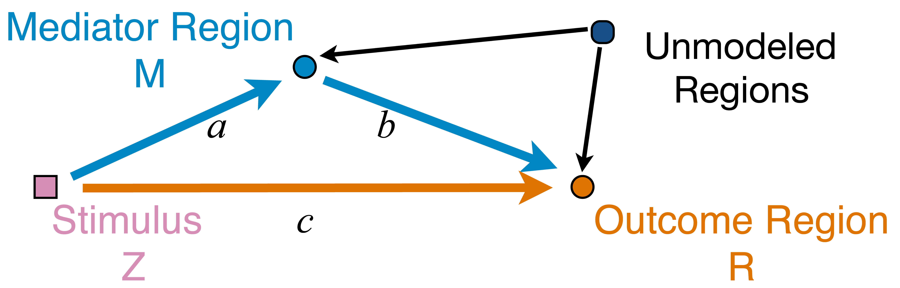
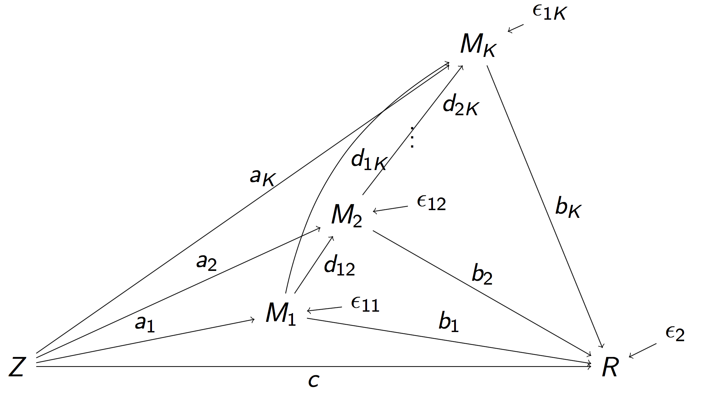
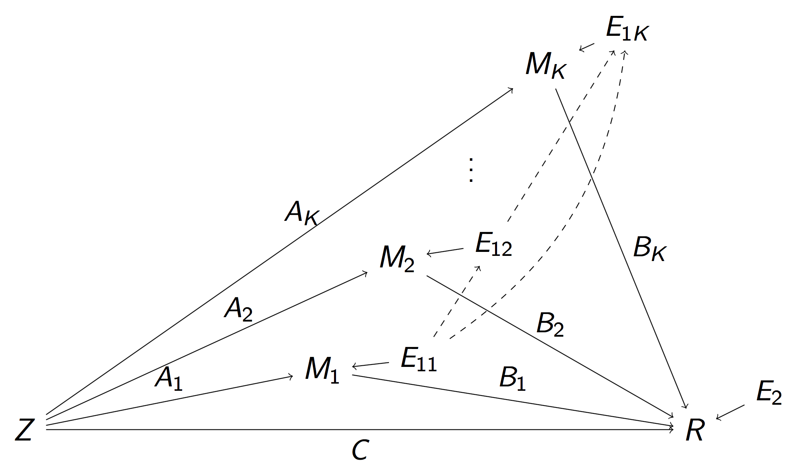
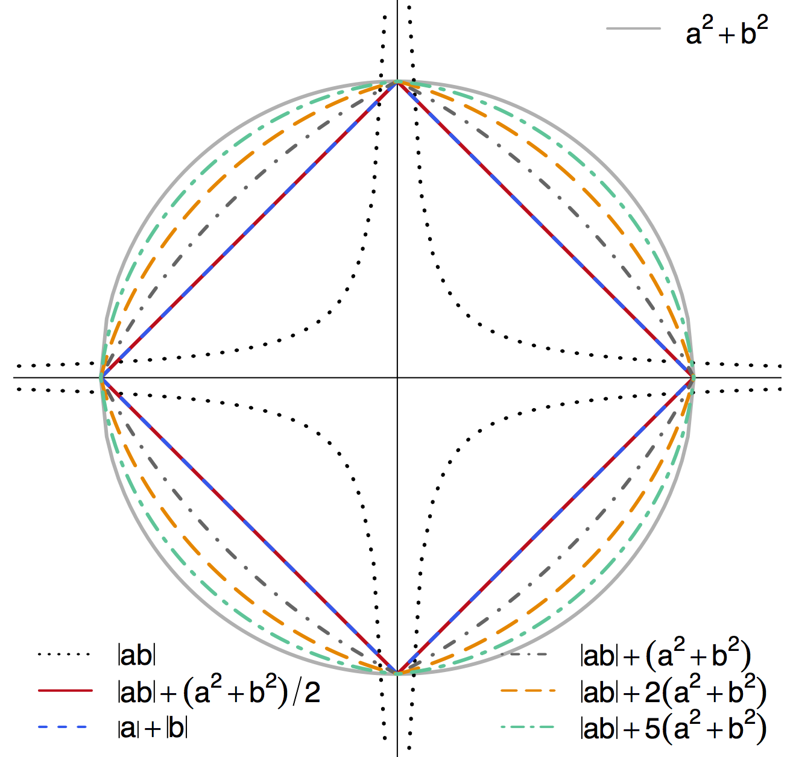
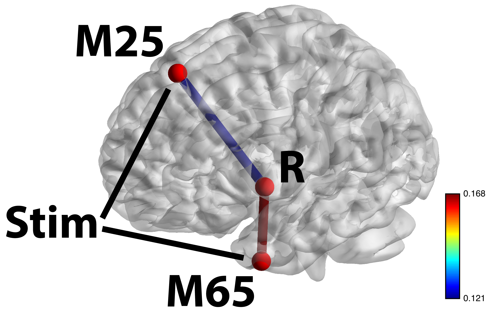
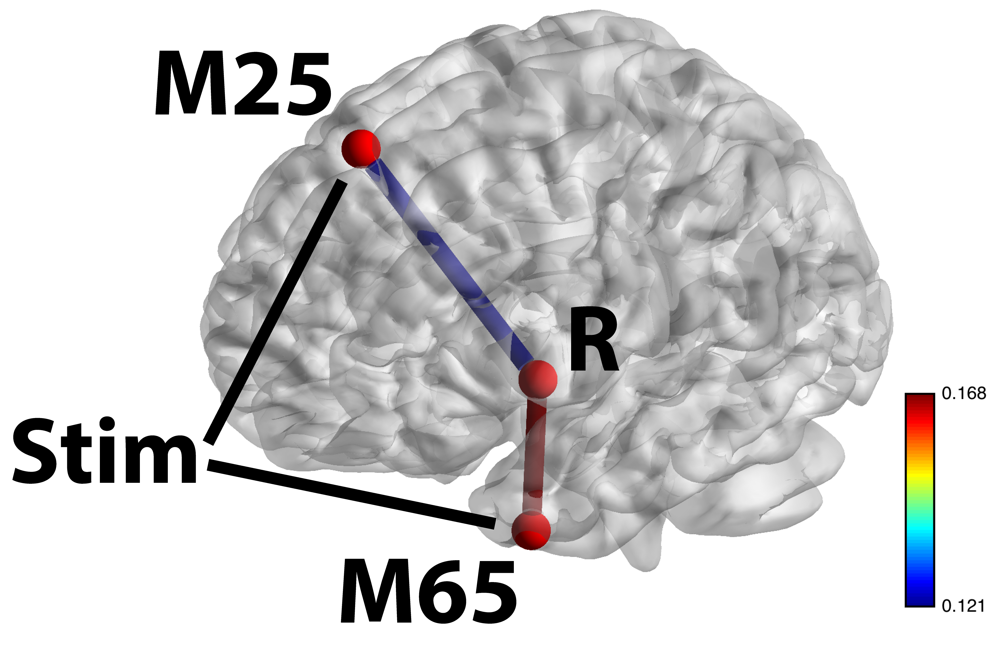

Estimating Brain Information Flow
via Pathway Lasso
Yi Zhao, Xi (Rossi) Luo
Department of Biostatistics
Center for Statistical Sciences
Computation in Brain and Mind
Brown Institute for Brain Science

December 11, 2016
Funding: NIH R01EB022911; NSF/DMS (BD2K) 1557467; NIH P20GM103645, P01AA019072, P30AI042853; AHA
Authors

Yi Zhao
(4rd Yr PhD Student,
Xi Luo
Brown University
Task fMRI

- Task fMRI: performs tasks under brain scanning
- Story vs Math task:
listen to story (treatment stimulus) or math questions (control), eye closed - Not resting-state: "rest" in scanner

fMRI data: blood-oxygen-level dependent (BOLD) signals from each
fMRI Studies
Sub 1, Sess 1

Time 1
2
…
~200
⋮
Sub i, Sess j
…
⋮
Sub ~100, Sess ~4
…
This talk: one subject, two sessions (to test replicability)
Network Model with Stimulus

Question: quantify
from stimulus to orange outcome circle/region Heim et al, 09
Pathway=Activation+Connectivity
- Activation: stimulus $\rightarrow$ brain region activity
- Connectivity: one brain region $\rightarrow$ another region
- Whether not two or more brain regions "correlate"
- Pathway: stimulus $\rightarrow$ brain region A $\rightarrow$ region B
- Strong path: strong activation
and strong conn - Zero path: zero activation
or zero conn, including- Zero activation + strong conn = zero
- Strong activation + zero conn = zero
Model
Mediation Analysis and SEM
 $$\begin{align*}M &= Z a + {U + \epsilon_1}\\ R &= Z c + M b + {U g + \epsilon_2}\end{align*}$$- Pathway effect: $a \times b$indirect; residual: $c$direct
- Mediation analysis
- Baron&Kenny, 86; Sobel, 82; Holland 88; Preacher&Hayes 08; Imai et al, 10; VanderWeele, 15;...
Mediation Analysis in fMRI
- Parametric Wager et al, 09 and functional Lindquist, 12 mediation, under (approx.) independent errors
- Stimulus $\rightarrow$ brain $\rightarrow$ user reported ratings, one mediator
- Usual assumption: $U=0$ and $\epsilon_1 \bot \epsilon_2$
- Parametric and multilevel mediation Yi and Luo, 15, with correlated errors for two brain regions
- Stimulus $\rightarrow$ brain region A $\rightarrow$ brain region B, one mediator
- Correlations between $\epsilon_1$ and $\epsilon_2$
- This talk: multiple mediator and multiple pathways
- High dimensional: more mediators than sample size
- Alt: dimension reduction by arXiv1511.09354 Chen, Crainiceanu, Ogburn, Caffo, Wager, Lindquist, 15
Full Pathway Model
- Stimulus $Z$, $K$ mediating brain regions $M_1, \dotsc, M_K$, Outcome region $R$
- Strength of activation ($a_k$) and connectivity ($b_k$, $d_{ij}$)
- Too complex, even for small $K = 2$ Daniel et al, 14
Reduced Pathway Model
 $$\begin{align}M_k & = Z A_k + E_{1k},\, k=1,\dotsc, K\\ R & = Z C + \sum_{k=1}^{K} M_k B_k + E_2 \end{align}$$- $A_k$: total inflow to mediator $M_k$; $B_k$: total conn
- Pathway effect: $A_k \times B_k$; Residual: $C$
Relation to Full Model
- Proposition: Our "total" parameters has explicit forms of "individual" flow parameters in the full model
- Proposition: Our $E_k$'s are correlated, but won't affect estimation (will affect variance)
- Reduced model: a step to select spatial mediators
- Strong overall inflow and strong conn flow
- Favor reduced: challenging to determine the temporal order because of low temporal resolution
Method
Regularized Regression
- Minimize the penalized least squares criterion
$$\sum_{k=1}^K \| M_k - Z A_k \|_2^2 + \| R - Z C - \sum_k M_k B_k \|_2^2 + \mbox{Pen}(A, B)$$ - All data are normalized (mean=0, sd=1)
- Want to select sparse
pathways for high-dim $K$ - Alternative approach: two-stage LASSO Tibshirani, 96 to select sparse
inflow andconnection separately: $$ \sum_{k=1}^K \| M_k - Z A_k \|_2^2 + \lambda \sum_k | A_k | \\ \| R - Z C - \sum_k M_k B_k \|_2^2 + \lambda \sum_k |B_k| $$
Penalty: Pathway LASSO
- Select strong pathways effects: $A_k \times B_k$
- TS-LASSO: shrink to zero when $A$&$B$ moderate but $A\times B$ large
- Penalty (prototype) $$ \lambda \sum_{k=1}^K |A_k B_k| $$
- Non-convex in $A_k$ and $B_k$
- Computationally heavy and non-unique solutions
- Hard to prove theory
- We propose the following general class of penalties$$ \lambda \sum_{k=1}^K ( |A_k B_k| + \phi A_k^2 + \phi B_k^2) $$
Contour Plot of Different Penalties
-
Non-differentiable at points when $a\times b = 0$ - Shrink $a\times b$ to zero
- Special cases: $\ell_1$ or $\ell_2$
- TS-LASSO: different $|ab|$ effects though $|a|+|b|$ same
Algorithm: ADMM + AL
- SEM/regression loss: $u$; Non-differnetiable penalty: $v$
- ADMM to address differentiability $$ \begin{aligned} \text{minimize} \quad & u(\Theta,D)+v(\alpha,\beta) \\ \text{subject to} \quad & \Theta=\alpha, \\ & D=\beta, \\ & \Theta e_{1}=1, \end{aligned}$$
- Augmented Lagrangian for multiple constraints
- Iteratively update the parameters
- We derive theorem on explicit (not simple) updates
Complications
- Mixed norm penalty $$\mbox{PathLasso} + \omega \sum_k (|A_k| + |B_k|)$$
- Tuning parameter selection by cross validation
- Reduce false positives via thresholding Johnston and Lu, 09
- Inference/CI: bootstrap after refitting
- Remove false positives with CIs covering zero Bunea et al, 10
Simulations
Simulations
- Our PathLasso compares with TSLasso
- Simulate with varying error correlations
- Tuning-free comparison: performance vs tuning parameter (estimated effect size)
- PathLasso outperforms under CV
Pathway Recovery
ROC
F1 Score

MSE
Our PathLasso (red) outperforms two-stage Lasso (blue)
Other curves: variants of PathLasso and correlation settings
Real Data: HCP
Data: Human Connectome Project
- Two sessions (LR/RL), story/math task Binder et al, 11
- gICA reduces voxel dimensions to 76 brain maps
- ROIs/clusters after thresholding
- Apply to two sess separately, compare replicability
- Jaccard: whether selected pathways in two runs overlap
- $\ell_2$ diff: difference between estimated path effects
- Tuning-free comparisons
Jaccard
$\ell_2$ Diff
Regardless of tuning, our PathLasso (red) has smaller cross-sess diff (selection and estimation) than TSLasso (blue)
 

Stim-M25-R and Stim-M65-R significant shown largest weight areas
- M65 responsible for language processing, larger flow under story
- M25 responsible for uncertainty, larger flow under math
Summary
- High dimensional pathway model
- Penalized SEM for pathway selection and estimation
- Convex optimization for non-convex products
- Sufficient and necessary condition
- Algorithmic development for complex optimization
- Improved estimation and selection accuracy
- Higher replicability in HCP data
- Manuscript:
Pathway Lasso (arXiv 1603.07749)